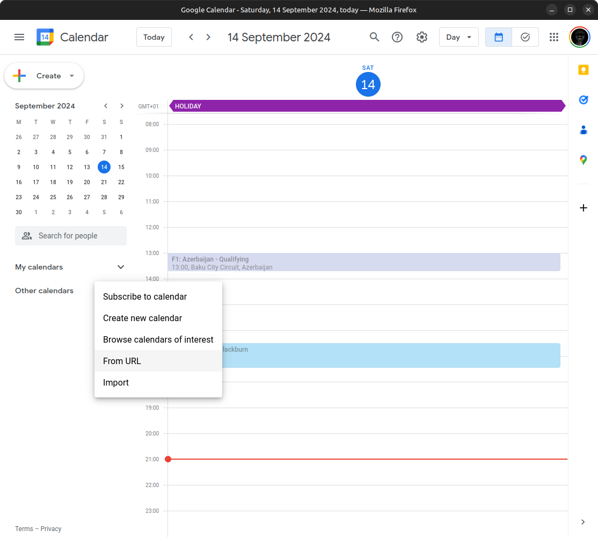
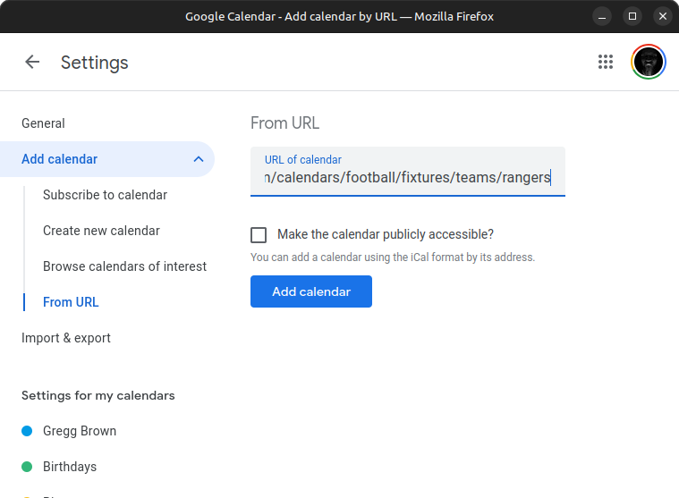

Adding Gers Fixtures to Your Calendar
Follow these steps to add up-to-date fixtures to your Google Calendar, and stays updated.
Important! Do this on your computer - won't work on your phone
-
Copy the URL for the Sky Sports Rangers Calendar:
http://www.skysports.com/calendars/football/fixtures/teams/rangers
-
Go to Google Calendar on your computer.
-
Click on '+' symbol next to Other calendars then choose From URL

-
Paste the URL for the calendar into the URL of calendar box and click Add calendar

- Viola! You are now subscribed to the live calendar!